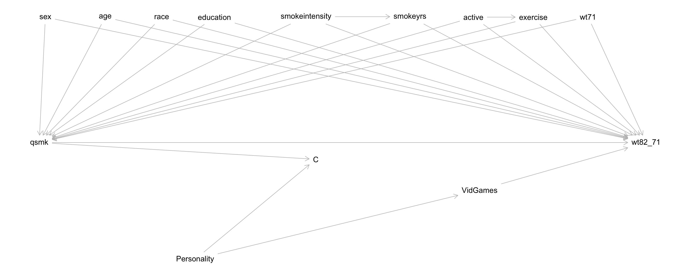
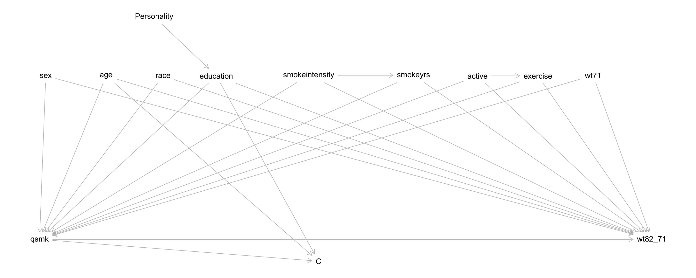

Topic 7 IP weighting for censoring
Learning Goals
- Understand how IP weighting can be used to address the lack of generalizability caused by censoring
Discussion
Language for interpreting coefficients in MSMs
\[ E[Y^a] = \beta_0 + \beta_1 a \]
- Context: Y is cholesterol, A is medication (a = 1: on medication)
- \(\beta_0\): The average potential cholesterol level when all are not on medication
- \(\beta_1\): The average causal effect: the change in average potential cholesterol level if everyone were on medication compared to if no one were on medication
Do we really care about the ACE?
- Depends on research goals, but yes, sometimes ACE is of interest.
- Is it a nationwide policy? If so, then enacting the policy means “treating” everyone and not enacting means treating no one.
- May care about the ACE within subgroups. We’ve seen this with effect modification MSMs:
\[ E[Y^a] = \beta_0 + \beta_1 a + \beta_2 M + \beta_3 a\times M \]
- Say \(M\) indicates history of heart disease (1: history. 0: no history)
- Question: What are the interpretation of \(\beta_1\) and \(\beta_3\) in this model?
What is the difference between regular and IP-weighted GLMs?
- Our tree diagrams showed that weighting allows us to create “populations” of all treated and all untreated.
- Our WHATIF book calls the combined population of the all treated and the all untreated a pseudopopulation
- We can model the outcomes in this pseudopopulation with standard regression models (marginal structural models).
- Allows us to estimate causal quantities: \(P(Y \mid \hbox{do}(A=a))\), \(E[Y \mid \hbox{do}(A=a)]\) (in potential outcome notation: \(P(Y^a)\), \(E[Y^a]\))
- Standard regression models without IP weights do not estimate these causal quantities.
Censoring and selection bias
Reminder: NHEFS investigation from last time
Research goal: What is the average causal effect of smoking cessation on weight gain at a follow-up visit about 10 years later?
- There were some people who did not have their weight measured at Visit 2. They must be excluded from our analysis.
- Define a censoring indicator \(C\) where \(C = 1\) means censored/excluded and \(C = 0\) means uncensored/included.
- Our analysis only generalizes to uncensored individuals–the types of people who would stay in the study!

- Before: just wanted to find \(Z\) such that conditional on \(Z\) (within subsets defined by \(Z\)), the outcomes of the treated and untreated were comparable.
- Could appropriately upweight the treated and untreated to get “populations” of all treated and all untreated.
- Now: also want to ensure that the outcomes in the censored and uncensored are comparable.
- Can appropriately upweight the uncensored to represent everyone had they not been censored.
- The censored get zero weight. (We don’t observe them!)
- When are the outcomes in the censored and uncensored comparable?
- When variables in \(A\) and \(Z_2\) together d-separate \(C\) and the outcome \(Y\).
- e.g., The DAG below. View \(C\) as the new “treatment” variable.
- Another way to put it: when we put a box around \(C\) in the DAG, \(Z\) must d-separate \(A\) and \(Y\) under the null.
Same condition as before, now explicit about paths with conditioned-on colliders (non-backdoor paths).
Questions: \(C\) is inherently conditioned on in our analysis (\(C = 0\)).
- What set \(Z\) d-separates the treatment and outcome under the null?
- What is a set \(Z_2\) such that \(Z_2 \cup A\) (read \(Z_2\) “union” \(A\), or \(Z_2\) and \(A\) together) d-separate \(C\) and the outcome?
Conclusion:
- \(Z\) should include:
sex,age,race,education,smokeintensity,smokeyrs,active,exercise,wt71, andVidGames
(Same as before with the addition ofVidGames) - \(Z\) blocks spurious, non-causal paths between \(A\) (
qsmk) and \(Y\) (wt82_71)
- \(Z_2\) should include
VidGames - Together with \(A\), \(Z_2\) blocks spurious, non-causal paths between \(C\) and \(Y\)
- Note that \(Z_2\) is contained within \(Z\).
- This will be the case when \(A\) is a cause of \(C\) (often true).
Ultimate goal: Want to upweight individuals using \(P(A, C = 0 \mid Z)\)
- Why? Same rationale as our tree diagram with additional \(C = 1\) and \(C = 0\) branches.
- Allows us to estimate \(E[Y^{a, c = 0}]\): expected potential outcome under treatment \(a\) and when no one has been censored (\(C = 0\))
We can express \(P(A, C = 0 \mid Z)\) as the following:
\[ \begin{align*} P(A, C = 0 \mid Z) &= P(A, C = 0, Z)/P(Z) \\ &= P(A \mid Z) P(C = 0 \mid A, Z) \end{align*} \]
- Based on the last line, we see (1) the propensity score and (2) another “propensity” of being uncensored.
- Will want models for both.
- (The censoring probability is not typically called a propensity score.)
A little extra theory (don’t worry about the math part below if you haven’t taken Probability):
\(Z\) may contain extra variables not in \(Z_2\) if there are, say, many common causes of \(A\) and \(Y\), but only a few of these are a cause of \(C\). Let’s say that these extra variables are in the set \(Z_1\). (\(Z = Z_1 \cup Z_2\))
If the variables in \(Z_1\) are not causes of \(C\), then \(C\) and \(Z_1\) are conditionally independent given \(A\) and \(Z_2\).
Going through the work below…
\[ \begin{align*} P(A, C = 0 \mid Z) &= P(A, C = 0 \mid Z_1, Z_2) \\ &= P(A, C = 0, Z_1, Z_2)/P(Z_1, Z_2) \\ &= P(A \mid Z_1, Z_2) P(C = 0 \mid A, Z_1, Z_2) \\ &= P(A \mid Z_1, Z_2) P(C = 0 \mid A, Z_2) \end{align*} \]
…this implies that the propensity score model (for \(A\)) should depend on all variables in \(Z\) (the set \(Z_1\) and \(Z_2\) together) and that the censoring probability model only need depend on \(Z_2\).
Analysis plan:
Notation:
- \(Z\) is the set that d-separates \(A\) and \(Y\) when \(C\) is conditioned on.
- \(Z_2\) (a subset of \(Z\)) that, together with \(A\), d-separates \(C\) and \(Y\)
Model the propensity scores \(P(A\mid Z)\) using all variables \(Z\) in the d-separating set. Create inverse probability weights \(W^A = 1/P(A\mid Z)\) (treatment weights).
Model the probability of censoring \(P(C \mid A, Z_2)\). Create inverse probability weights \(W^C = 1/P(C = 0\mid A, Z_2)\) (censoring weights).
Create final weights (for treatment and censoring) \(W^{A,C} = W^A\times W^C\).
Fit the desired marginal structural model with these final weights.
Exercises
A template Rmd is available here.
Setup
library(readr)
library(dplyr)
library(ggplot2)
library(geepack)
nhefs <- read_csv("https://cdn1.sph.harvard.edu/wp-content/uploads/sites/1268/1268/20/nhefs.csv")Create a censoring indicator variable that will be TRUE if the individual was censored and FALSE otherwise.
nhefs$cens <- is.na(nhefs$wt82_71)Throughout we’ll use the full nhefs dataset, and we’ll work from the DAG below (\(C\) has been conditioned on):

Part 1: Modeling to obtain weights
Based on the DAG above, identify the set of variables \(Z\) that d-separates
qsmkand weight gain.Fit an appropriate treatment propensity score model, and call this
ps_treat_mod. For simplicity, assume that a quadratic relationship for the quantitative variables gives a good fit. Make sure to wrap categorical variables insidefactor()in your model formula.Add a new variable to your dataset called
weights_treatthat contains the IP weights for treatment.Is it believable that quitting smoking (treatment) is a cause of censoring? How do the tabulations/calculations below help answer this?
# P(censored | quitters) and P(censored | nonquitter) table(qsmk = nhefs$qsmk, cens = nhefs$cens) table(qsmk = nhefs$qsmk, cens = nhefs$cens) %>% prop.table(margin = 1)How would you see if the data support the
age --> Candeducation --> Carrows? Describe, but don’t actually perform this analysis.Fit an appropriate model for the probability of censoring, and call this
prob_cens_mod. For simplicity, assume that a quadratic relationship for the quantitative variables gives a good fit. Make sure to wrap categorical variables insidefactor()in your model formula.Add a new variable to your dataset called
weights_censthat contains the IP weights for censoring. (Note that in R, the default for logistic regression is to model the probability of the outcome variable equaling 1.)Add a final weight variable to your dataset called
weight_TC.
Part 2: Fitting MSMs
Fit the following two MSMs (\(A\) is qsmk, and for sex, 0 indicates males and 1 indicates females):
\[ E[Y^{a, c=0}] = \beta_0 + \beta_1 a \] \[ E[Y^{a, c=0}] = \beta_0 + \beta_1 a + \beta_2\hbox{sex} + \beta_3 a\times\hbox{sex} \]
Note: In our previous analysis where we worked with nhefs_subs, we had actually fit the following:
\[ E[Y^{a} \mid C = 0] = \beta_0 + \beta_1 a \] \[ E[Y^{a} \mid C = 0] = \beta_0 + \beta_1 a + \beta_2\hbox{sex} + \beta_3 a\times\hbox{sex} \]
Refit these models here using the relevant weights. How do your results compare?